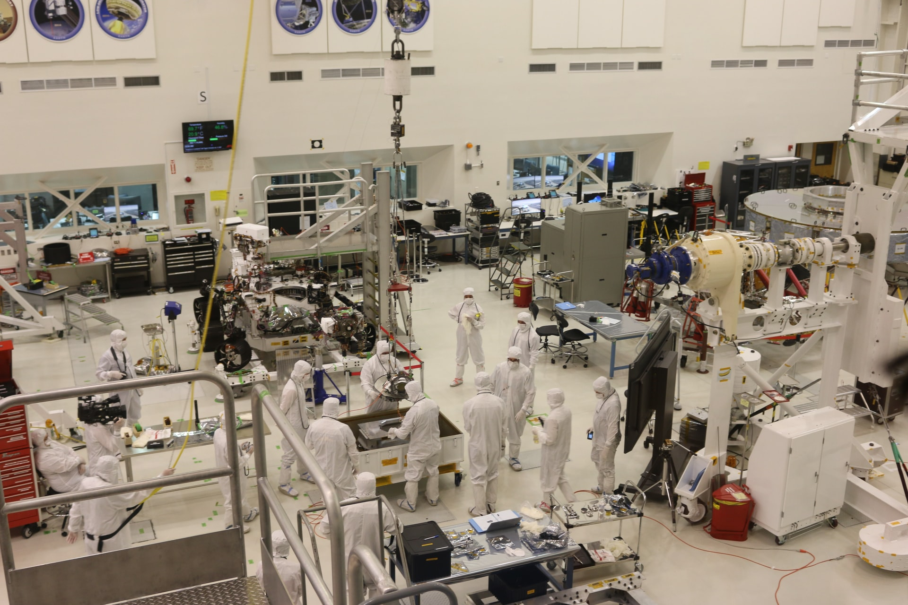
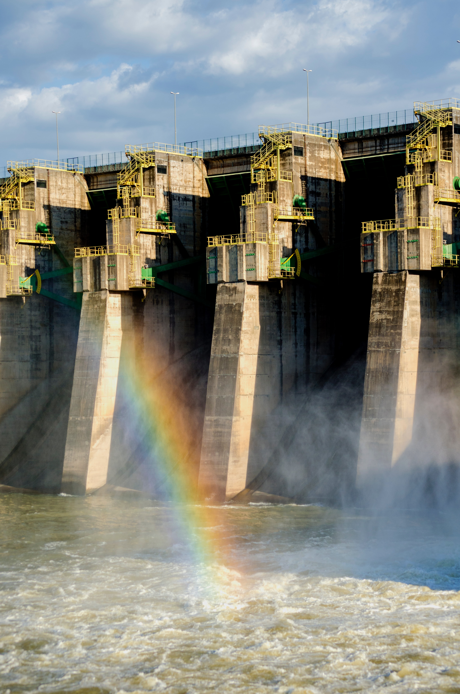
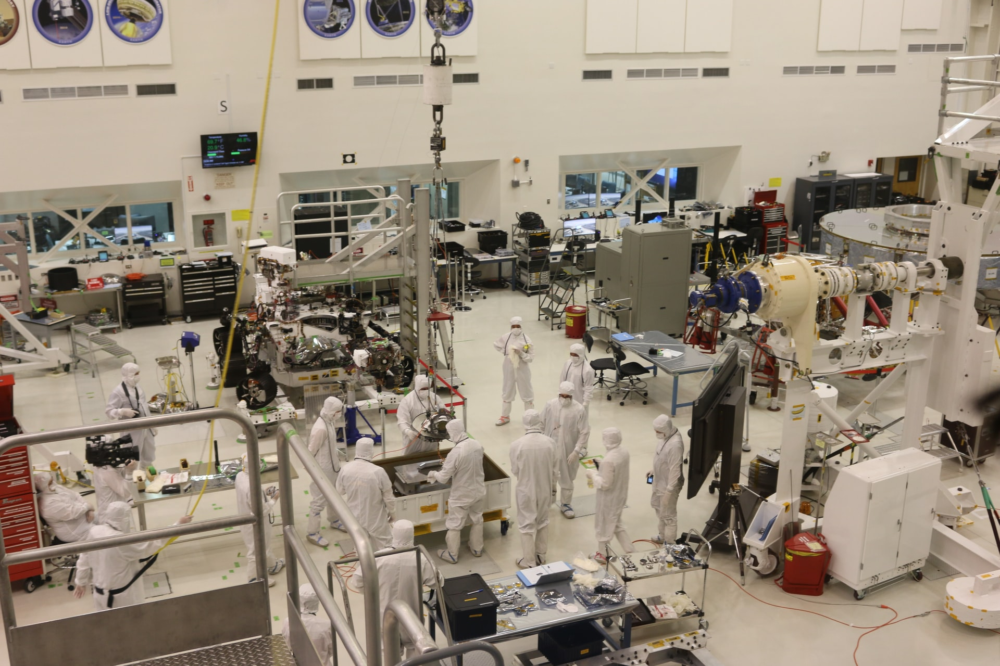
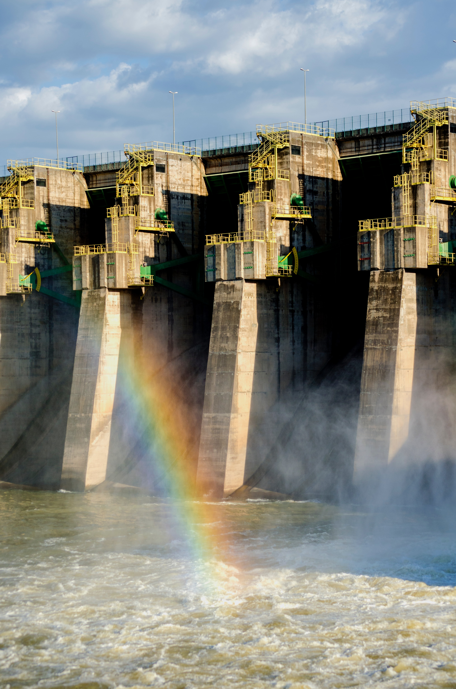
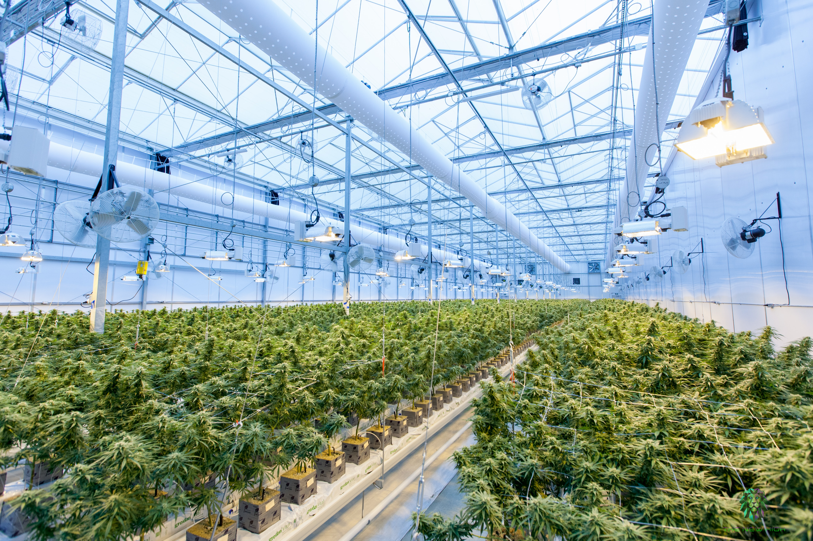
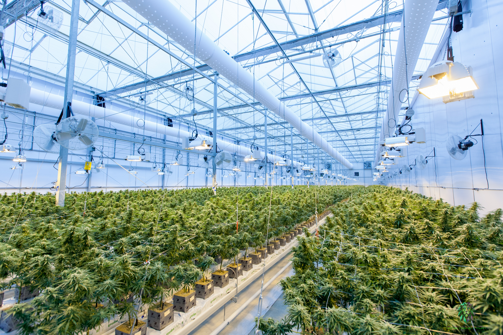
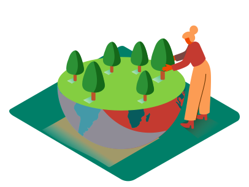
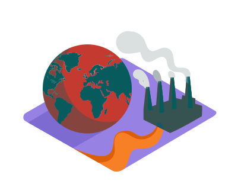

 


Desafíos y oportunidades para la implementación, el seguimiento y el examen del ODS 9 y sus metas:
Desafíos:
El avance de la penetración de Internet continúa en América Latina y entre ellos Guatemala. Sin embargo, quedan pendientes problemas relacionados con la calidad y la equidad del acceso.

Guatemala depende de las exportaciones de recursos naturales y de manufacturas intensivas en recursos naturales como fuente de divisas. Estas últimas cumplen también un papel clave en las exportaciones de toda Centroamérica.
El auge de las materias primas tuvo efectos positivos sobre diversos indicadores económicos y sociales, pero al mismo tiempo agudizó la “primarización” de las exportaciones, razón por la cual el fin del auge vino acompañado de una desaceleración económica.
Los países que han logrado reducir las diferencias de ingreso per cápita con las economías más avanzadas lo han hecho transformando sus patrones de especialización. Sin embargo, Guatemala no ha sido capaz de transformar su estructura productiva con una velocidad e intensidad similar a la de economías asiáticas como China. Nuestro patrón de especialización ha cambiado poco en los últimos 30 años.
Oportunidades:
